一、产品定位及功能介绍
微信小程序是一种全新的连接用户与服务的方式，可以在微信内被便捷地获取和传播，同时具有出色的使用体验。
二、小程序注册
1. 收到内测邀请函并申请内测
被邀请的内测方登录微信公众平台会收到【内测邀请】的站内信，查看站内信详情并点击申请跳转至内测申请页面。
2. 填写内测信息
填写微信小程序的登录帐号、密码及内测方联系方式，勾选协议后，完成申请。
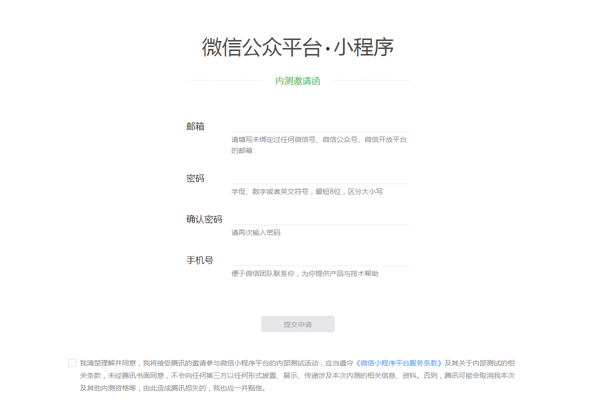
3. 登录
使用申请内测时填写的帐号和密码，在微信公众平台官网首页（mp.weixin.qq.com）的登录框中直接登录。

4. 继续帐号注册流程
登录后将继续下一步的注册流程。内测方需选择主体类型选择，完善主体信息和管理员信息。
4.1 主体类型选择
| 帐号主体 | 范围 |
|---|---|
| 企业 | 企业、分支机构、企业相关品牌。暂不支持个体工商户类型。 |
| 政府 | 国内、各级、各类政府机构、事业单位、具有行政职能的社会组织等。目前主要覆盖公安机构、党团机构、司法机构、交通机构、旅游机构、工商税务机构、市政机构等。 |
| 媒体 | 报纸、杂志、电视、电台、通讯社、其他等。 |
| 其他组织 | 不属于政府、媒体、企业或个人的类型。 |
4.2 填写主体与管理员信息
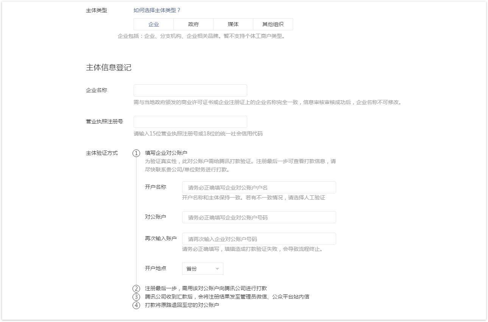
4.3 主体身份验证
- 企业类型帐号，需要用公司的对公账户向腾讯公司打款来验证主体身份。打款信息在提交主体信息后可以查看到。
- 政府、媒体、其他组织类型帐号，必须通过微信认证验证主体身份。
| 帐号主体 | 主体身份验证方式 |
|---|---|
| 企业 | 对公打款 |
| 政府 | 微信认证 |
| 媒体 | 微信认证 |
| 其他组织 | 微信认证 |
5. 完成注册
三、小程序信息完善及开发前准备
微信小程序信息完善步骤和开发可同步进行。
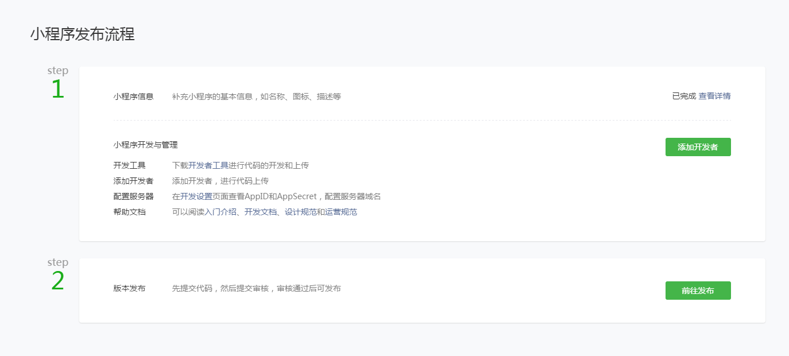
1. 信息完善
补充小程序名称信息，上传小程序头像，填写小程序介绍并选择服务范围。
提示：
- 如果选择了特殊行业的服务类目，需要提供资质材料提交审核。点击查看所需资质材料
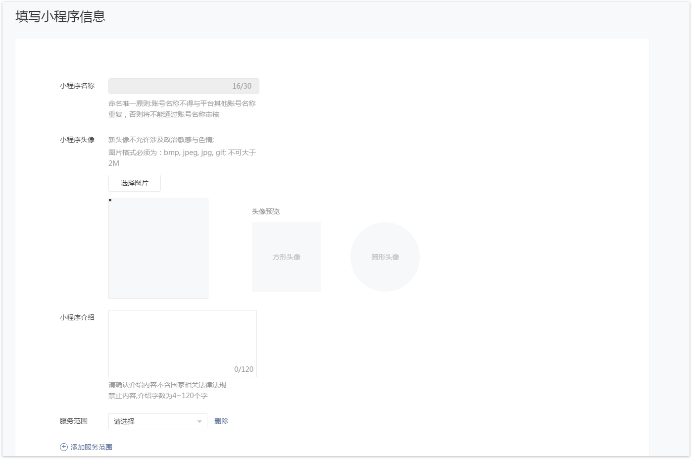
2. 开发前准备
2.1 绑定开发者
登录微信公众平台小程序，进入用户身份- 开发者，新增绑定开发者。每个小程序下开发者总数不多于10个。
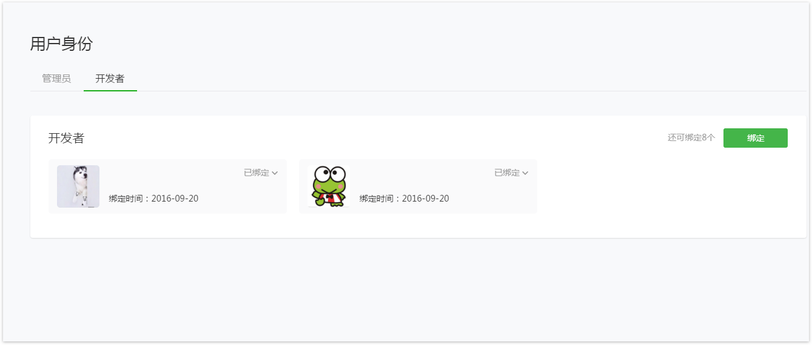
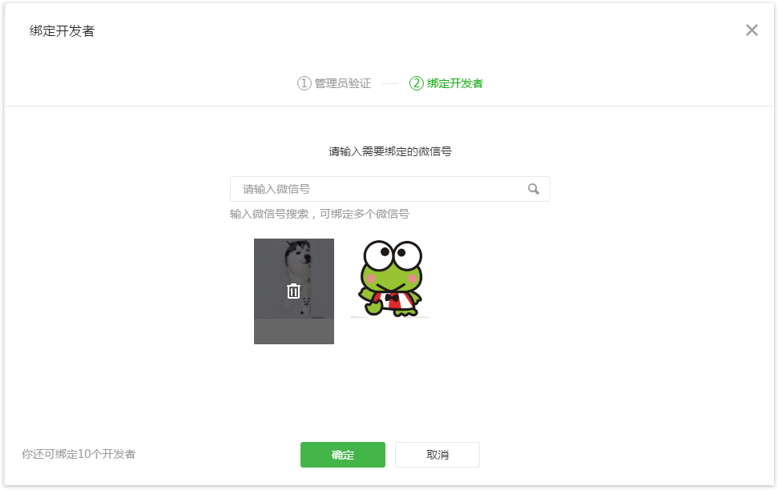
2.2 获取AppID
进入设置-开发设置，获取AppID信息。
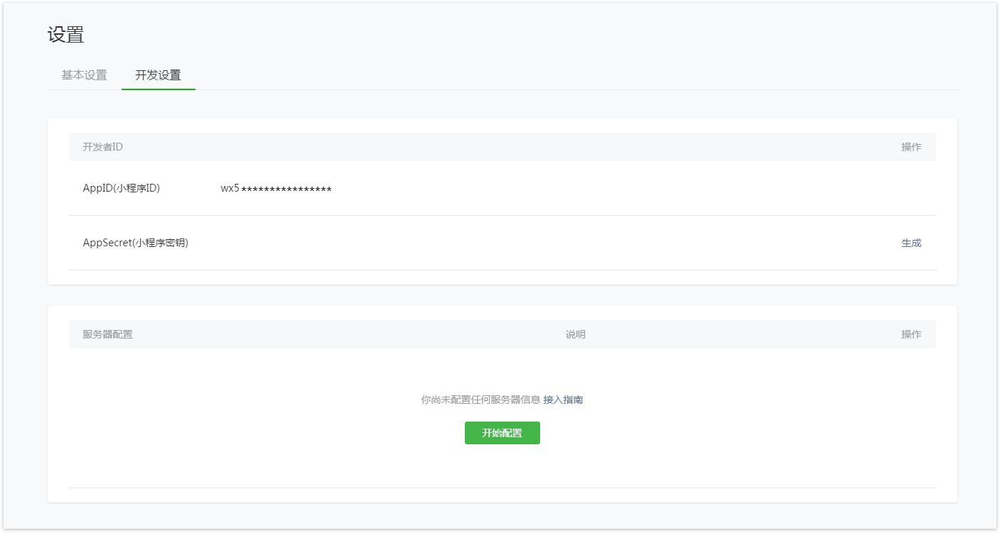
2.3 阅读开发文档并下载开发者工具
点击页面右上角文档-开发，详细阅读开发者文档并进入下载页面，下载开发者工具。
四、开发者工具的使用
1. 下载并安装开发者工具
2. 登录
开发者工具使用管理员或者绑定的开发者微信号扫码登录。
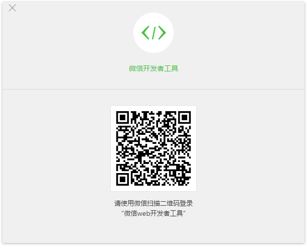
3. 创建项目
小程序的管理员或已绑定的开发者可以创建项目。需要填写AppID、项目名称及本地开发目录。
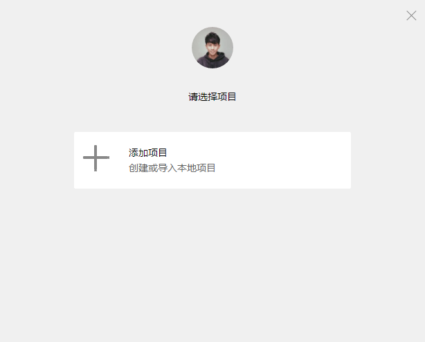
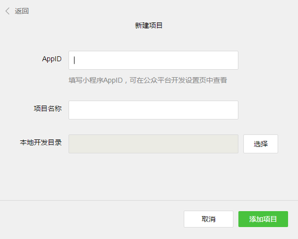
4. 开发
开发者可在开发者工具内完成小程序的开发、调试、预览、上传代码等操作。

5. 预览
小程序的管理员或是开发者可点击左侧“项目”，进入上传/预览页面。点击“预览”，开发者可用本人微信扫码，在手机内预览小程序的效果。
注意：
- 开发工具上的二维码仅限于登录开发工具的开发者本人可以扫码并预览，其他人无法扫码预览。
- 请用微信客户端iOS或Android的6.3.27及以上版本才可以扫码预览。
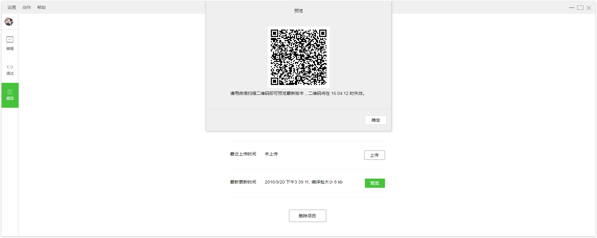
6. 上传代码
小程序的管理员可点击左侧“项目”，进入上传/预览页面，使用管理员本人微信号扫码确认上传。 注意：
- 只有管理员有权限可以上传，开发者没有权限上传。
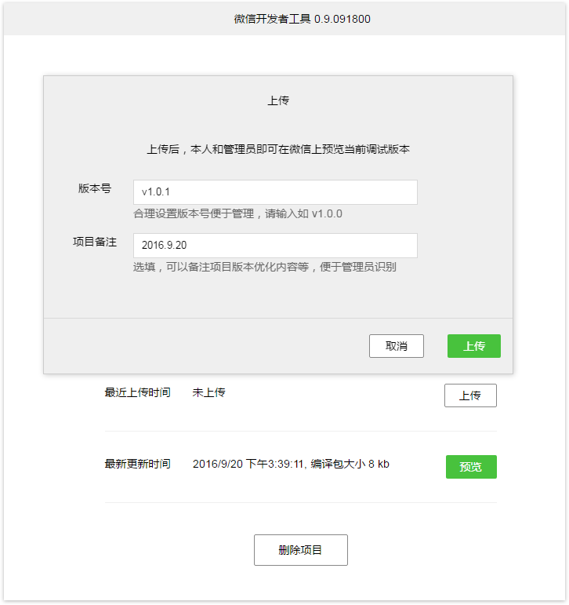
代码上传后可在微信公众平台（mp.weixin.qq.com），开发管理页面中看到对应提交的版本。
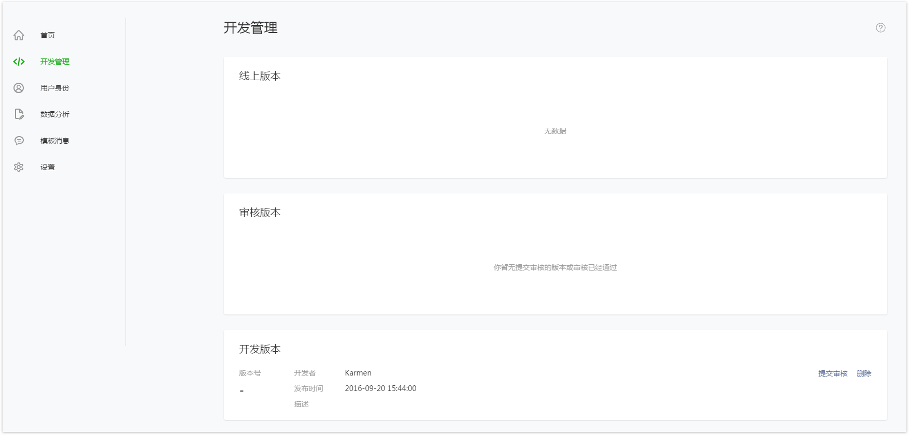
五、代码审核与发布
1. 提交审核
登录微信公众平台小程序，进入开发管理，开发版本中展示已上传的代码，管理员可提交审核或是删除代码。
2. 审核信息填写
2.1 绑定测试帐号（选填）
该微信号将提供给微信审核人员审核微信小程序时登录使用，测试微信号需能够体验小程序的全部功能，请勿使用常用微信号扫描。

2.2 配置功能页面
为了用户可以快速搜索出小程序，需要填写重要业务页面的类目与标签。重要业务页面组数不多于5组。
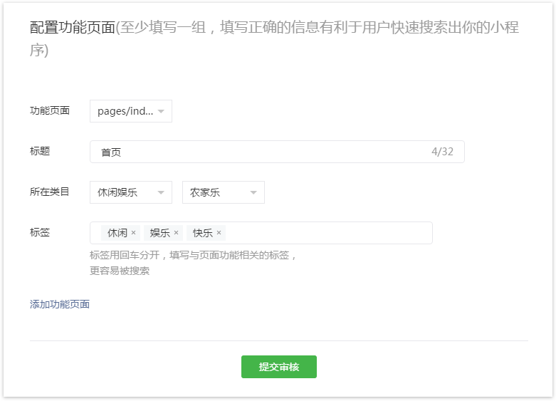
2.3 提交审核
提交审核完成后，开发管理页中审核版本模块展示审核进度。
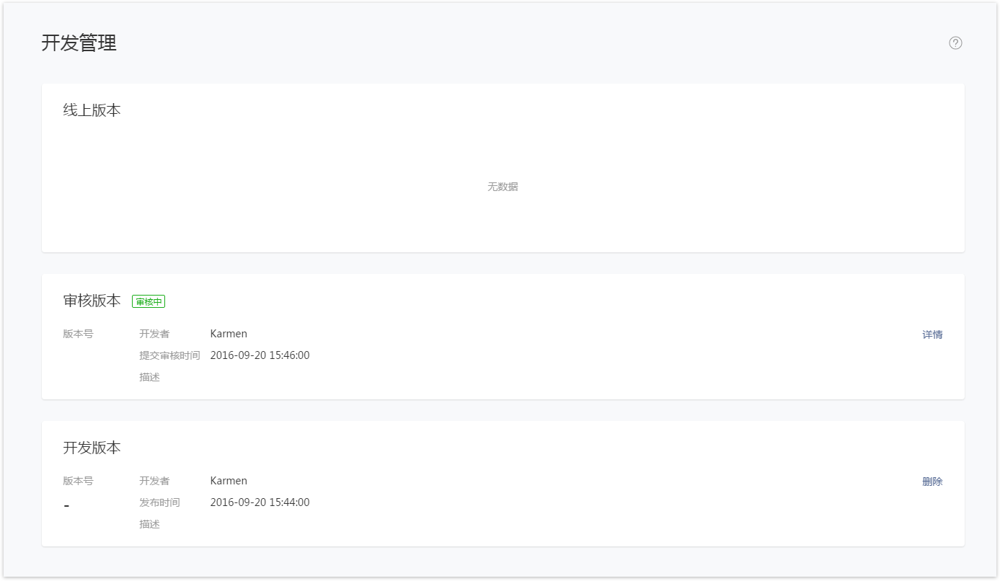
提示：
- 开发者可参考《微信小程序平台常见拒绝情形》，详细了解审核标准。
2.4 代码发布
代码审核通过，需要开发者手动点击发布，小程序才会发布到线上提供服务。
注意： 内测期间，代码发布按钮不可点击。